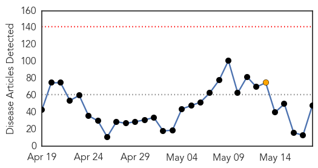
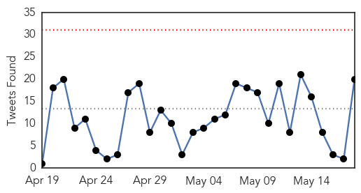
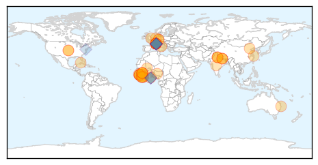
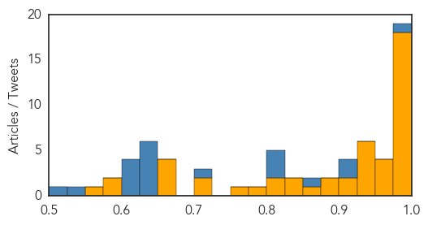
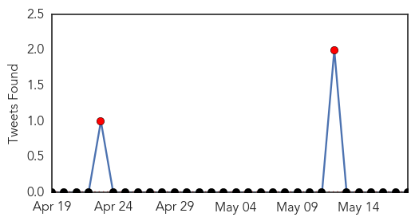

Ebola
30-Day Web Trend
0 alerts, 1 warnings

30-Day Twitter Trend
0 alerts, 0 warnings

Article Locations
Article Confidences
Top Articles:
- 1.000
- Guinea registers 10 new Ebola infections
- 1.000
- Guinea registers 10 new Ebola infections
- 1.000
- Japanese man in hospital for Ebola
- 1.000
- Guinea registers 10 new Ebola infections
- 0.999
- Think again: Why did Liberia beat Ebola before Guinea or Sierra Leone?
- 0.999
- News Scan for May 18, 2015
- 0.997
- WHO under Fire for Slow Response to Ebola Epidemic
- 0.996
- Flinders News> Blog Archive > Ebola crisis sets back African health targets
- 0.995
- Ebola crisis sets back African health targets
- 0.994
- WHO boss Chan launches $100 million health emergency fund
- 0.994
- For Efforts that Ended Ebola, Nyenswah Commends AU
- 0.994
- Public health in Africa beyond Ebola
- 0.992
- Merkel plugs global epidemics plan at WHO conference
- 0.992
- Facing Ebola Outbreak
- 0.990
- WHO Director-General Margaret Chan Creates $100 Million Fund for Future Crises
- 0.981
- Aust nurses receive awards for Ebola work
- 0.978
- Citing ‘defining moment’ sparked by Ebola outbreak, UN health agency chief pledges key reforms
- 0.976
- Chinese medical team returns after anti-Ebola task- China.org.cn
- 0.970
- How Nigeria Beat The Ebola Virus In Three Months
- 0.969
- Merkel urges tighter WHO management after Ebola catastrophe
- 0.967
- Tony Blair Commends Sierra Leone in the fight against Ebola, Expresses support to the Country’s Post Ebola Recovery Programme
- 0.959
- Politico SL News After 7 days NERC confirms new Ebola case in Freetown
- 0.943
- WHO Director-General's speech at the Sixty-eighth World Health Assembly
- 0.936
- Cuban ebola team nominated for Nobel Peace Prize peoplesworld
- 0.934
- WHO to Create New Program for Health Emergencies
- 0.933
- Dutch company donates drugs to Sierra Leone
- 0.930
- Humans living longer by six years, report shows
- 0.925
- WHO recommends Ebola reagent kit developed by China
- 0.922
- US$100 million fund needed for future health alerts
- 0.902
- Welcome to the Expotimes News
- 0.900
- Merkel warns WHO meet of antibiotics dangers
- 0.898
- Plan to reform WHO after Ebola to be unveiled by Angela Merkel
- 0.866
- NJALA UNIVERSITY IS A MESS
- 0.835
- News release on the opening day of the 68th World Health Assembly - World
- 0.835
- Plan to reform WHO after Ebola to be unveiled by Angela Merkel
- 0.808
- Need redoubled efforts towards public health challenges
- 0.804
- Need redoubled efforts towards public health challenges: Nadda
- 0.793
- WHO boss Chan launches $100 million health emergency fund
- 0.762
- 54 quarantined at PTS « Awoko Newspaper
- 0.714
- Suspected Ebola Patient Hospitalized in Fukuoka after trip to Guinea
- 0.705
- India gives $2.1 million to WHO; Health Minister JP Nadda assumes WHA presidency
- 0.672
- India gives USD 2.1 million to WHO, JP Nadda assumes WHA presidency
- 0.659
- President Koroma Receives New UNMEER Head
- 0.656
- Parliament to Visit Local Councils
- 0.653
- 20th CBRNE Soldiers help to halt Ebola in Liberia
- 0.597
- Ebola: Back to School in Sierra Leone
- 0.585
- India commits $ 2.1 mn to WHO
- 0.557
- ‘Mega-disasters’ and other reasons why WHO director’s speech should scare you
Top Tweets:
- 0.984
- Dr Chan: On 9 May WHO declared an end to the Ebola outbreak in Liberia WHA68 Ebola
- 0.919
- Dr Chan: The Ebola outbreak shook this Organization to its core WHA68
- 0.910
- Ebola Update: 26763 confirmed probable and suspected cases reported in three most affected countries with 11074 deaths. EbolaResponse
- 0.870
- In Sierra Leone Religion Major Player in Ebola Fight - Voice of America http://t.co/lfIE6ydozA ebola EVD
- 0.822
- Dr Chan: Our biggest emergency response is concentrated in West Africa where we currently have 800 staff on the ground WHA68 Ebola
- 0.817
- RT: challenges in containing Ebola in Sierra Leone: no policy on outbreak response parallel & unilateral efforts by multipl…
- 0.802
- WHO Vows Reform After Ebola Outbreak Mistakes - TIME http://t.co/lpXZebc2v8 ebola EVD
- 0.708
- The week ahead: Eurovision to Ebola - Newsweek http://t.co/roliJYz8EG ebola EVD
- 0.646
- Fukuoka man returning from Guinea gets tested for possible Ebola infection - The Japan Times http://t.co/klIWL1Xxxu ebola EVD
- 0.643
- Recovering from the Ebola outbreak in SierraLeone: @FAO boosts support to the Holima Agribusiness Centre https://t.co/00a1TdgK60
- 0.639
- Fukuoka man undergoing Ebola tests after visiting Guinea - The Japan Times http://t.co/zEQN91ZFxd ebola EVD
- 0.639
- Fukuoka man undergoing Ebola tests after visiting Guinea - The Japan Times http://t.co/vM2r8ibLWQ ebola EVD
- 0.633
- WHO announces changes after widespread Ebola criticism - CNN http://t.co/YPJwBgvHki ebola EVD
- 0.633
- Chancellor Merkel: Ebola outbreak in West Africa was a painful reminder to all of us for urgent international action WHA68
- 0.615
- Dr Chan: WHO was overwhelmed as were all other responders WHA68 Ebola
- 0.613
- Controlling the Last Known Cluster of Ebola Virus Disease — Liberia January–February 2015 http://t.co/WyfkMzvU9Z
- 0.612
- Mark your calendar: May 19 the World Health Assembly discusses the Ebola outbreak http://t.co/4cHnwnSiib WHA68 EbolaResponse
- 0.609
- Dr Chan: The world was ill-prepared to respond to an outbreak that was so widespread so severe so sustained and so complex Ebola WHA68
- 0.547
- RT: What worked and where do we need to improve to extinguish the Ebola outbreak? WHA68 SocialGood Tune in LIVE: http://t.…
- 0.515
- Dr Chan: I have heard what the world expects from WHO: clear lines of command & control for streamlined admin procedures WHA68 Ebola
Meningitis
30-Day Web Trend
2 alerts, 0 warnings
30-Day Twitter Trend
2 alerts, 0 warnings

Article Locations
Article Confidences

Top Articles:
Top Tweets:
-
No tweets found for May 18, 2015